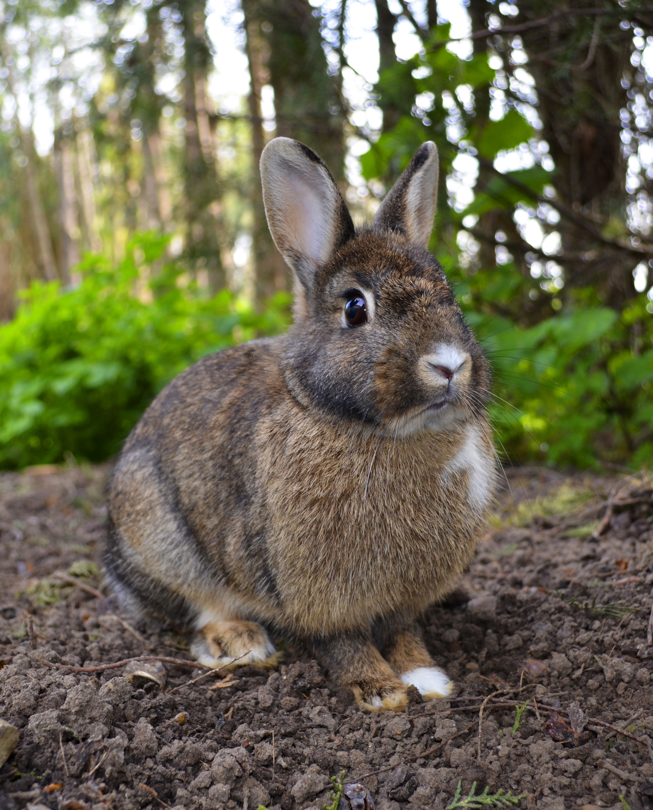

Dette er min side
Dette er en netside
Her er en liten kanin

Detter er krusiv
Dette er fremhevet
Dette er fet tekst/this is bold text
dette er også fet tekst/ bold text
Marks a text
Understreket tekst
Dette blir litt skrivemaskin
Dette skal være lite
hei, jeg heter Jimmy